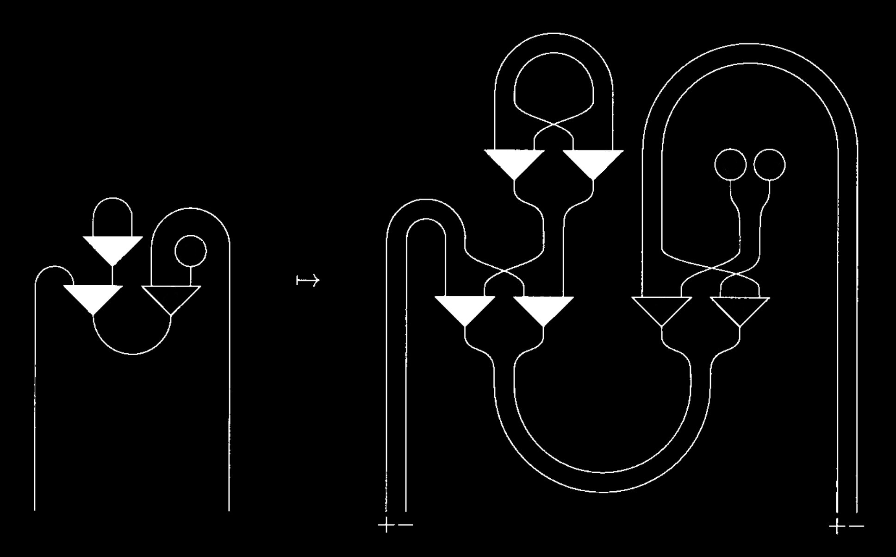
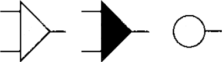
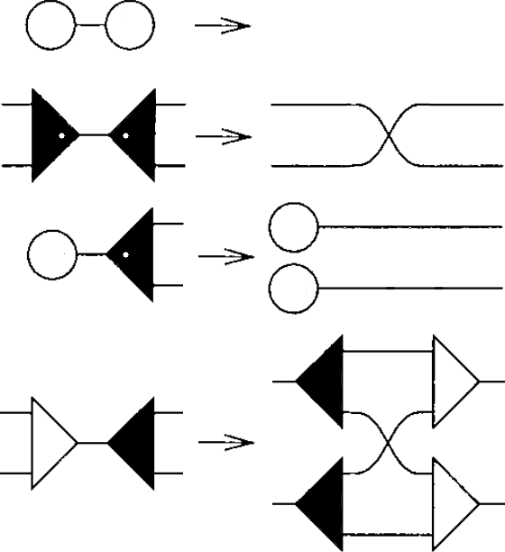
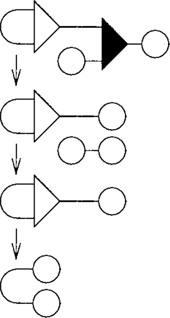
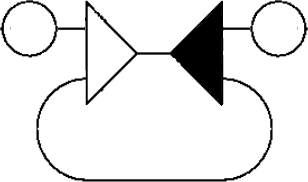
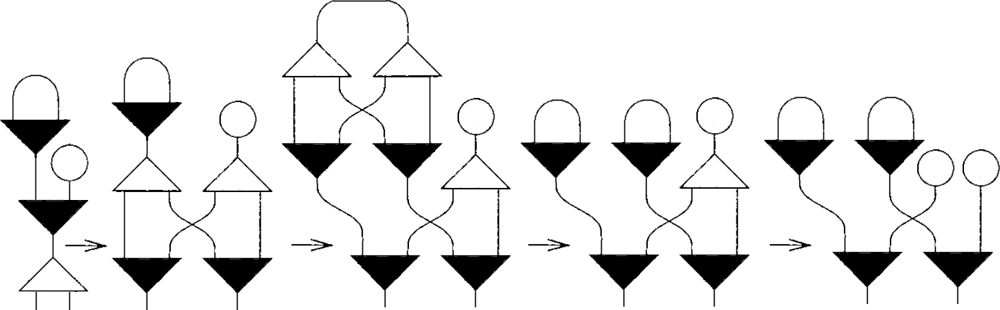

Symmetric Interaction Calculus(SIC) is a simple model of Interaction Nets that can emulate any interaction nets, it was specified in Lafont's later work, this page is an attempt at making the subject approachable to people outside of academia.

Interaction nets are a graph rewriting system.
Interaction nets(INs) encode computations in a graph of nodes that is rewritten until it stabilizes, they can capture all computable functions with no external machinery or a garbage collector. A computational step can be defined as a constant time operation, and the model allows for parallelism in which many steps can take place at the same time.
- Interaction Nets, Yves Lafont's original paper.
- A Programming Language for Interaction Nets, Ian Mackie
- Low-level language for interaction nets, Shinya Sato
Introduction to symmetric interaction combinators(SIC).
A distant civilization travels to earth and lands a ship, they have never developed an alphabet, numbers are a foreign concept to them, the pen-n-paper game sprouts is the most competitive activity in their homeworld, the ship's computer is programmed entirely with drawings.
Nodes
The drawings show 3 different types of nodes, we'll give them names, so let's say: Delta, Gamma and Epsilon. Each one has a single primary port, Delta and Gamma have two auxiliary ports:

Rules
The nodes are wired together, and each combination of connected primary ports between two nodes result in a different interaction. The following four rules are capable of encoding all of computation:

A black triangle with a white dot indicates that it can be either a Delta or Gamma node, but in the second rule, both triangles have to be of the same kind.
Ann1(E><E): Two epsilons, annihilate each other.Ann2(D><D/G><G):Two gammas/deltas, annihilate each other and connect their wires in parallel.Com1(E><G): An epsilon and a gamma/delta, create two epsilons connected to the outgoing ports.Com2(D><G): A gamma and a delta create two new nodes connected into a square.

Programming
Programming is done entirely by drawing a graph of connected nodes, and reducing it using the four rules until it stabilizes. Each transformation is equal to a computing step, every operation operates locally so the order of operation does not matter, any two nodes connected by their primary port can be reduced at once.
Here is an example of a graph that reduces itself into nothing, in 3 steps:
Loops
Not all graphs stabilize, for example the following will loop for ever, creating its else again and again, resulting into an infinite loop, you can see it in action in this video:

Duplication
Here is a more complex graph that shows how the delta-gamma connection creates two instances of a gamma node and an epsilon node in five steps:

Numbers out of nothing
[Writing this bit, come back later]
- Symmetric Interaction Combinators, Uxntal.
- Interaction Nets in Motion, animation by Yves Lafont.